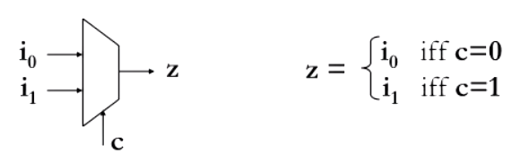
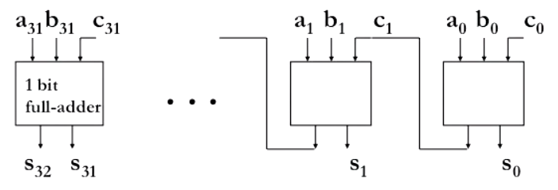
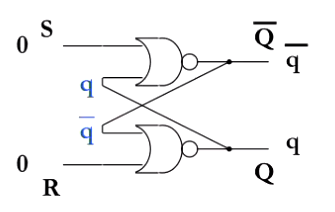
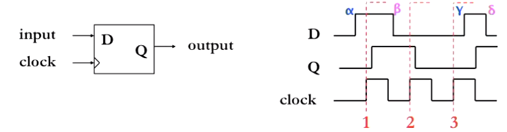
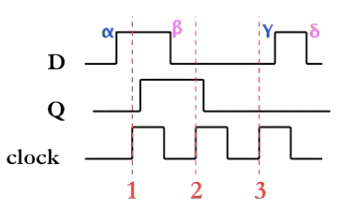

Introduction to Computer Systems
Floating point
- Mantissa/significand
- Fractional part
- Exponent
- Power of

Convert
in floating point form


Why normalize?
- Simplifiys machine representation
- Simplifys comparisons e.g. $0.00000101$ vs $0.000001$
- More compact for small/large numbers
IEEE 654 Floating Point Standard
- 1'st bit is sign bit (
 )
) - 8 bits for exponent (
 )
) - rest for mantissa (
 )
)
Encoding:

(127 is the bias)

Why bias?
- Exponent can always be positive (no need to store sign bit)
- Simplifys comparison operations
Special values
| Exponenent | Mantisa | Number |
|---|---|---|
| 0 | 0 | 0 |
| 1-254 | Anything | Floating point number |
| 255 | 0 | Infinity (signed) |
| 255 | non-zero | NaN (not a number) |
MIPS
- ISA
- Instruction set architecture - The interface between the hardware and the software
- MIPS
- A real world ISA used by many diffrent processors since the 80s
Instruction set
- Assemble Language
- Symbolic representation of machine instructions.
Machine code are instructions stored as binary values, assembly language is a one-to-one mapping that allow human programmers to reason about programs.
High level:
a[0] = b[0] + 10
MIPS:
lw r4, 0(r2) # Load word - Get the value fo b[0] from memory and store in r4
add r5,r4,10 # Add - Compute b[0]+10 and store in r5
sw r5,0(r1) # Save word - Store r5 into a[0]
MIPS does not allow accessing and operating on data at the same time
Arithmatic and Logical Operations
add a, b, c
sub a, b, c
sll a, b, c
srl a, b, c (logical)
(logical)sra a, b, c (arithmatic)
Registers
- Register
- Storage locations inside the processor that holds program variables and control state
- Some registers are special purpose
- Register
$zerois always zero for example $pcis the program counter, the adress of the next instruction$rastores the return adress to return to after executing a method
- Register
- Most are for general use
$s0-$s7are variables$t0-$t9are tempory variables
Endinness
- Endinness
- The sequential order in which bytes are arranged in memory
- Big-endian
- Bytes orders by most significant bit
- Little-endian
- Bytes ordered by least significant bit
MIPS instruction format
Each assembly instruction translates into 1 machine instruction. Their are 3 formts of instructions
-
R-format (e.g.
add,sub,and,or...)![12c8ab366120af5c253fead499d1ed81]()
-
I-format (e.g.
addi,lw,sw, ...)![4d903eab43a29ce1a9b97bd614efd88b]()
-
J-format (
j)
MIPS examples
Swap
This function swaps two consecutive array elements
# Compute the adress of the array
sll $t0, $a1 2 # reg $t0 = idx * 4
add $t0, $a0, $t0 # reg $t0 = v + (idx * 4)
# $t0 holds the address of array[idx]
# Load the two values to be swapped
lw $t1, 0($t0) # reg $t0 = array[idx]
lw $t1, 4($t0) # reg $t0 = array[idx + 1]
# Store the swapped values back in memory
sw $t2, 0($t0) # array[idx] = $t2
sw $t1, 4($t0) # array[idx+1] = $t0
If
beq $s1,$s2,label2 # if(s1 == s2) jump to label2
stmnt1 # else
j label3 # skip stmnt2 # continue from label3
label2: stmnt2 # body of if
label3: stmnt3 # continue from if
Loop
loop:
beq $s1,$zero,end # $s1 holds count
... # Body of loop
j loop # Jump back to start
end:
...
Method calls
To jump into a method use jal label (jump and link) which:
- Sets
$rato$pc + 4(the next instruction) - Sets
$pcto the adress of the label
When returning user jr $ra (jump register) which:
- Sets
$pcto the value of$ra, the adress we want to return to
Convention
It is convention to use registers in a certain way
$a0-$a4as method parameters$r1and$r2as return values$s0-$s7are preserved across call boundrys$t0-$t9are not preserved across call boundrys
Nested calls
If we have a nested call, we can store the return adress onto the stack allowing us to nest "infinitly" (or until the machine runs out of stack space)
To push a word:
- Move the stack pointer down with
addi $sp, $sp, -4 - Save the return adress onto the stack
sw $ra 0($sp)
To pop a word:
- Fetch return adress from the stack
lw $ra, 0($sp) - Move stack pointer up with
addi $sp, $sp 4
The stack is also used to:
- Save
$sregisters - Pass and return values if their isnt enough registers
- Local variables inside a function (that dont fit into registers)
Logic design
- Combinational logic
- Out depends on the current input (no memory)
- Sequential logic
- Output depends of current input and some previous inputs (requires memory)
Combinational logic circuits
| Name | Description |
|---|---|
| Inverter / NOT gate | Inverts the input signal |
| OR gate | Outputs 1, if atleast one input is 1 |
| AND gate | Outputs 1, if both inputs are 1 |
| NAND gate | Outputs 1, if bot inputs are not 1 |
- Functional completeness
- Set of gates that can express any boolean function.
Functional-complete sets:
- AND + OR + NOT
- NAND
- NOR
Multiplexer
- Multiplexer
- Selects one of multiple inputs

To convert this curcuit to logical gates, we look at its truth table
![0dd3a6f8c12dc37416f5e401f3ac9c51]()
Next we look at all the cases where the output is  . And all the inputs and or each of these cases to get the following:
. And all the inputs and or each of these cases to get the following:
![940c59ee45f9defda4bee0cc3105f297]()
This is the sum of products form.
Arithmetic
If we used sum of products form for an adder (adds two binary numbers together), their would be way to many curcuits to reason about with 32/64 inputs. Instead we sequence a smaller curcuit.
Full / 1-bit adder takes in 2 digits and a carry, produces result digit and carry out. We then use multiple copys to create a 32-bit adder (ripple carry adder):

Propagation delay
- Propagation delay
- Time delay between input signal change and output signal change.
The propagation delay depends on:
- Technology (transistor parameters, wire capacitance, etc).
- Delay through gate
- Number of gates
Sequential logic
- Sequential logic
- Output depends on current and past input(s), i.e. the curcuit has memory.
SR Latch
The SR latch is the simplest form of memory.

It has the following truth table
![d3a80714f3cd9b60829d94d6ea50cea5]()
Clock
We know the because of propagation delay, curcuits with lots of gates take some time to output. Outputs may also fluctute if certain paths are shorted than others. The clock forces all state changes to happen when its 1, and guarentees the state is correct while it is 0, thus we avoid any occilation effecting calculations.
Level-triggered D Latch
A latch which only only changes when the clock is 1.

For example  changes before , but
changes before , but  wont change until after .
wont change until after .
Edge-triggered D flip-flop
We can do better. Half a clock cycle is still alot of time, thus an edge-triggered D flip-flop will only change when the input changes on a positive clock edge.

For example  doesnt cause a change since it happens after the clock edge.
doesnt cause a change since it happens after the clock edge.
General sequential logic curcuit
Now if we tie multiple D flip-flops together (with a common clock) we get a register. Combine this with some combinational logic (whos state is saved by the registers to be used next cycle) and we arrive at a general sequential logic circuit.
Hardware FSM
We can use FSM to derive the seqential logic curcuit.
Processor Design - Single Cycle
- Datapath
- Performs the data operations as controlled by the instructions
- Control
- Controls the datapath, memory and I/O as controlled by the instructions
Main functions
- Fetch instructions from instruction memory
- Read the register operands
- Use the ALU for computation
- Arithmetic
- Memory adress
- Branch target
- Access data memory for load/store
- Store the result of the computation/data into the destination register
- Update the program counter (PC)
R-Format instructions
- Read two register operands
- Perform the arthemetic/logical operation
- Write register result
Load/Store instructions
- Read register operands
- Calculare adress using 16-bit offset
- Use ALU with sign-extend
- Read (for load) or write (for store) the memory.
- (Load only) Update destination register
Branch instructions
- Read register operands
- Compare operands
- Use ALC, subtact and check Zero output
- Calculate target adress
- Sign-extend the immediate
- Shift left 2 places (word align)
- Add to PC + 4